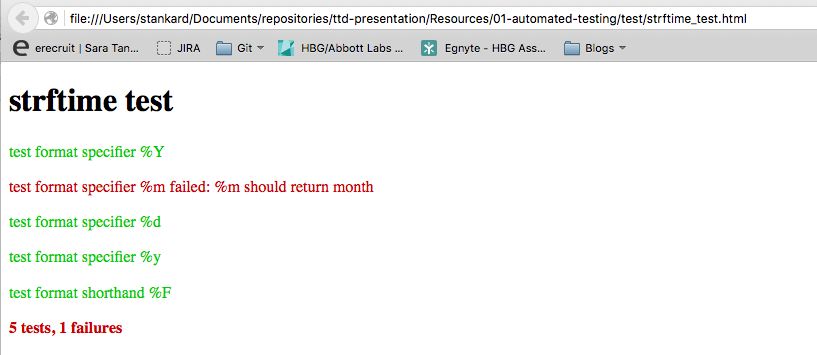

");
var successful = 0;
var testCount = 0;
for (var test in tests) {
testCount++;
try {
tests[test]();
output(test, "#0c0");
successful++;
} catch (e) {
output(test + " failed: " + e.message, "#c00");
}
} var color = successful == testCount ? "#0c0" : "#c00";
output("" + testCount + " tests, " +
(testCount - successful) + " failures",
color);
}
function output(text, color) {
var p = document.createElement("p");
p.innerHTML = text;
p.style.color = color;
document.body.appendChild(p);
}

testCase("description of testcase", {
"description of assert": function(){assert()},
"description of assert2": function(){assert()},
"description of assert3": function(){assert()}
})